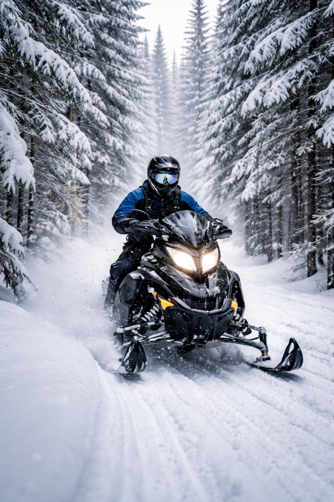

Trails, cabins, private entertainment, and everything your group needs for a northern New Hampshire snowmobile weekend.
Pittsburg, New Hampshire is the snowmobile capital of New England — and one of the most genuinely unique bachelor party destinations in the region. Located in the far north of New Hampshire near the Canadian border in Coös County, Pittsburg offers hundreds of miles of groomed snowmobile trails, remote cabin rentals, and a complete absence of crowds. If your group wants a bachelor party weekend that nobody else in your circle has done, a Pittsburg snowmobile trip is it.
The format writes itself: ride all day Saturday on the trails, get back to the cabin, warm up, and call in private entertainment for the evening. VIP Entertainment Inc. has been making the trip to Pittsburg since 1992 — we go where no other NH entertainment agency will. That combination of a full snowmobile day and a private show at the cabin is consistently one of the most enjoyable bachelor party formats we service all winter.

Pittsburg NH snowmobile trails — hundreds of miles of groomed riding in New England's northernmost town.
Pittsburg sits at the northern tip of New Hampshire, about 20 miles south of the Canadian border. It is genuinely remote — that remoteness is exactly the point. Drive times from major New England cities:
The drive north through the White Mountains and up the Connecticut Lakes region is one of the more scenic winter drives in New England. Groups typically drive up Saturday morning, ride all day, and return Sunday. Some groups book Friday night to Saturday night for the full weekend experience.
Pittsburg has over 300 miles of groomed snowmobile trails — the largest trail network in New Hampshire. The trails are maintained by the Pittsburg Ridge Runners snowmobile club and NHSA-affiliated clubs throughout the region. Trail conditions in January and February are consistently excellent when snowfall cooperates — Pittsburg sits at higher elevation than most of southern NH and holds snow better and longer through the season.
Major trail systems in the area include trails around First Connecticut Lake, Back Lake, Lake Francis, and the Connecticut Lakes State Forest. Guided snowmobile tours are available through local outfitters for groups who don't have their own sleds. Rental machines are available in Pittsburg and surrounding towns — book rentals in advance for peak winter weekends.
Pittsburg's cabin and vacation rental market is the backbone of the bachelor party experience here. Large group-friendly rentals accommodate bachelor party groups of every size — from 6-person cabins to large lodge properties that sleep 15 or more. Airbnb and VRBO have solid Pittsburg inventory, and local rental management companies in the area book directly.
Most Pittsburg rentals include direct snowmobile trail access — you can ride right from the property. That convenience is a genuine advantage over destinations where you need to trailer sleds to a trail head. Look for properties near First Connecticut Lake or Back Lake for waterfront cabin access combined with trail proximity.
VIP Entertainment Inc. provides private exotic dancer entertainment for Pittsburg NH bachelor parties. We are one of the only entertainment agencies in New England that regularly services the Pittsburg market — most agencies won't make the trip this far north. We will.
The Pittsburg cabin format is one of the best private show environments we work in. The group is together in a remote, private space after a full day of riding. Everyone is relaxed, in good spirits, and ready for the evening. Shows run a minimum of two hours — Pittsburg cabin shows frequently run longer when the group is having a good time.
Book Private Entertainment for Your Pittsburg Bachelor Party
VIP Entertainment Inc. — serving Pittsburg NH since 1992.
Pittsburg NH Strippers — nhstripper.com →
Pittsburg NH — newhampshirestrippers.com →
Call 603-627-0007 | Text 802-342-5925 | vipstrippers@gmail.com
No deposit — pay on arrival. Real performers since 1992.
Friday evening: Drive up from southern NH or Boston. Arrive at the cabin, unload, stock the fridge. Quick dinner in Pittsburg or at the cabin. Early night — Saturday is a full riding day.
Saturday: Hit the trails by 9 or 10 AM. Ride through the Connecticut Lakes trail system — most groups do 4-6 hours of riding with a lunch stop. Return to the cabin by 4 PM. Clean up, warm up, have dinner at the cabin. Private entertainment arrives Saturday evening for the main event. Shows run 2-3+ hours. Group has the rest of the cabin night to themselves after.
Sunday: Late morning departure. Drive south. Stop in Littleton or Franconia for breakfast on the way home.
Snowmobiling is the primary draw but Pittsburg offers other winter activities worth building into the weekend. Ice fishing on the Connecticut Lakes is popular — guided trips are available through local outfitters. Cross-country skiing and snowshoeing trails run through the Connecticut Lakes State Forest. The general remoteness and scenery of northern New Hampshire in winter is itself an experience — most bachelor party groups have never been this far north and the landscape is genuinely dramatic.
Pittsburg draws summer visitors for ATV riding, fishing, hiking, and remote cabin weekends. The summer version of the Pittsburg bachelor party is less common than winter but runs on the same format — outdoor activities during the day, private entertainment at the cabin in the evening. ATV trail access in summer is similar in quality to snowmobile trail access in winter. Call us for summer Pittsburg availability.